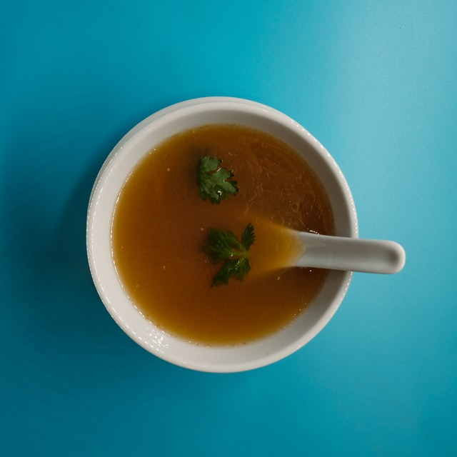

Miso Soup

A light, warm, umami water
Made with kombu, bonito flakes, and miso paste,
Japanese miso soup is a simple and comforting.
Ingredients
- 4 cups water
- 1 (4 inch) piece dashi kombu (dried kelp)
- ½ cup bonito flakes
- ½ (12 ounce) package tofu, cut into chunks
- 1 teaspoon dried wakame
- 3 tablespoons miso paste
- ¼ cup chopped green onions
Steps
-
Heat water in a large pot over low heat. Add kombu and cook until the mixture
just begins to simmer.
Stir in bonito flakes until combined. Remove pot from
the heat and let dashi sit, uncovered, for 5 minutes.
Strain and set aside.
-
Heat 3 1/2 cups dashi in a pot over medium heat. Add tofu and wakame; stir to combine.
Remove 1 cup warmed dashi to a small bowl and whisk in miso paste. Pour miso mixture back
into the pot with remaining dashi.
Stir until warmed through. Serve garnished with chopped
green onions.